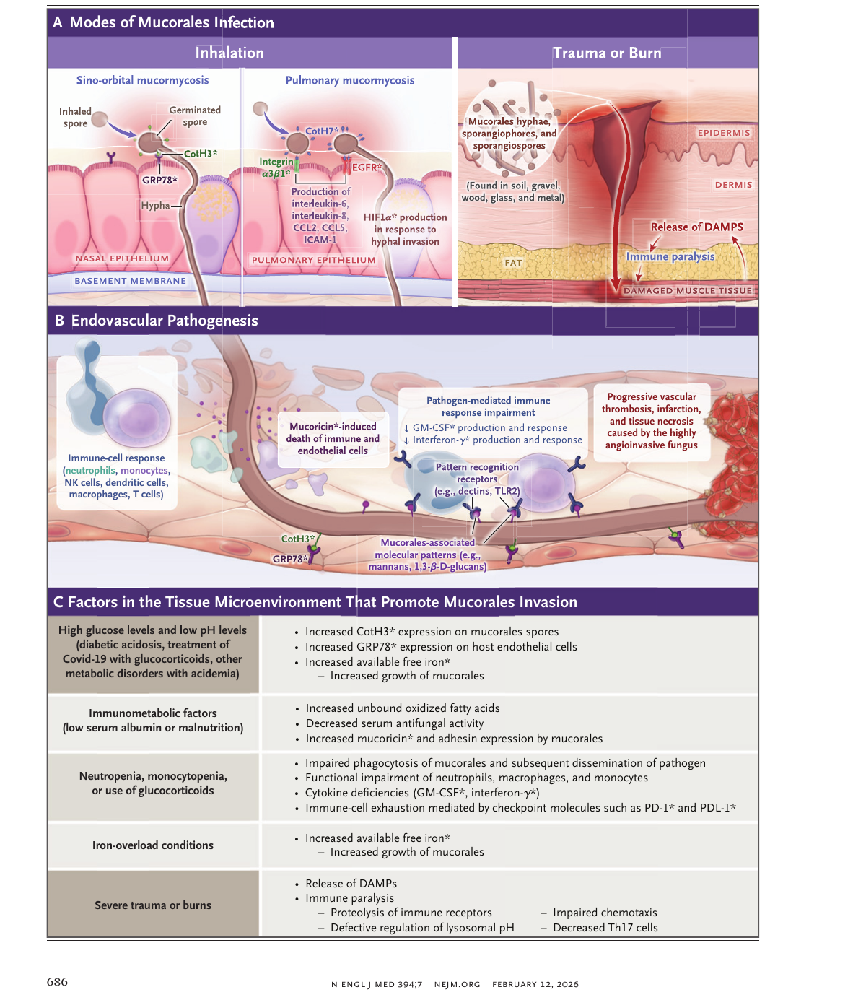
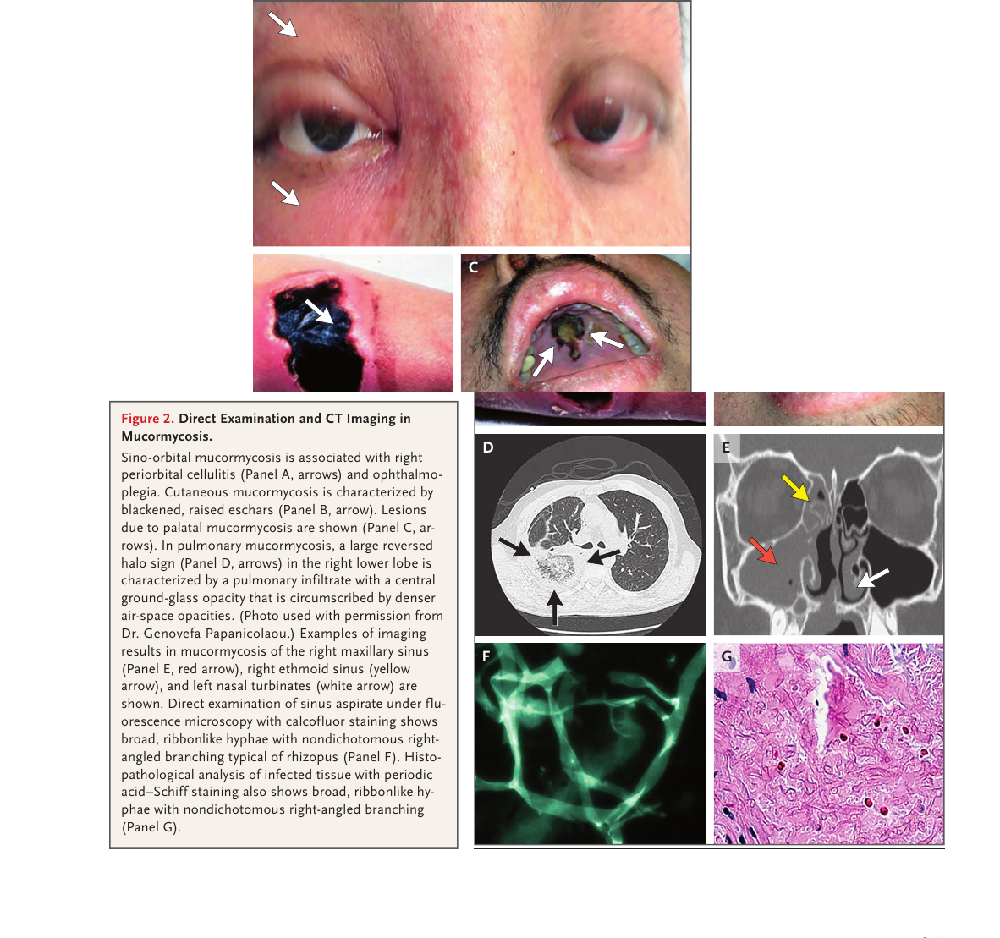

本ページで使用する略語一覧
| LAmB | Liposomal Amphotericin B — リポソーマルアムホテリシンB |
| CotH3 | Coat protein H3 — ムーコラレスの胞子表面コートタンパク（宿主細胞への接着・侵入に関与） |
| GRP78 | Glucose-Regulated Protein 78 — 宿主血管内皮細胞上の受容体（CotH3のリガンド） |
| GM-CSF | Granulocyte-Macrophage Colony-Stimulating Factor — 顆粒球マクロファージコロニー刺激因子 |
| HIF1α | Hypoxia-Inducible Factor 1α — 低酸素誘導因子1α（菌の浸潤時に誘導） |
| DAMPs | Damage-Associated Molecular Patterns — 損傷関連分子パターン（外傷時の免疫麻痺に関与） |
| PD-1 | Programmed Cell Death Protein 1 — 免疫チェックポイント分子 |
| PD-L1 | Programmed Death Ligand 1 — PD-1のリガンド |
| CT | Computed Tomography — コンピュータ断層撮影 |
| MRI | Magnetic Resonance Imaging — 磁気共鳴画像 |
| BAL | Bronchoalveolar Lavage — 気管支肺胞洗浄 |
| MALDI-TOF MS | Matrix-Assisted Laser Desorption/Ionization Time-of-Flight Mass Spectrometry — 質量分析による菌同定法 |
| PCR | Polymerase Chain Reaction — ポリメラーゼ連鎖反応 |
| PAS | Periodic Acid–Schiff — 過ヨウ素酸シッフ染色（病理組織染色） |
| NK細胞 | Natural Killer cell — ナチュラルキラー細胞 |
本総説の要点
ムーコル症（mucormycosis）は、重篤な免疫不全患者（血液悪性腫瘍・移植・糖尿病）、および重大外傷を負った免疫正常者に生じる、急速進行性・頻繁に致命的な侵襲性真菌症である。毛細血管浸潤（angioinvasion）による組織梗塞が病態の要であり、副鼻腔眼窩型・鼻脳型・副鼻腔肺型・消化管型・皮膚型・筋骨格型・骨関節型・播種型など多彩な臨床病型をとる。
治療の成否は5つの柱—早期検出とステージング、抗真菌薬の迅速投与、感染組織の外科的切除、免疫不全の回復、代謝異常の是正—にかかっており、そのうちのどれ一つも欠くことができない。WHO はムーコラレスを「優先病原体リスト」に指定しており、本総説は 2026 年 2 月時点のエビデンスに基づく最新の理解を提供する。
SECTION 1 分類と命名の変遷
Zygomycosis → Mucormycosis への改称
「ムーコル症（mucormycosis）」は 1885 年に mycosis mucorina として初記載された。以前は Zygomycota 門に属するとしてzygomycosisと呼ばれていたが、分子系統解析により Zygomycota が多系統的（polyphyletic）であることが明らかとなり、Mucormycetes 綱・Mucorales 目に改定された。これに伴い「zygomycosis」という呼称は廃止され「mucormycosis」が正式名称となった。
WHO はムーコラレスを高優先病原体（high-priority pathogens）として指定しており、世界的な臨床的重要性が認識されている。
SECTION 2 医学的に重要な菌属
主要6属と臨床的特徴
ムーコラレスは土壌・腐敗有機物に偏在する。医学的に最も重要な属を以下に示す。
| 菌属 | 臨床的特徴 |
|---|---|
| Rhizopus | 最多頻度。R. arrhizus など。CotH3/CotH7 による宿主侵入が最もよく研究されている |
| Mucor | 2番目に多い。M. circinelloides など |
| Lichtheimia | （旧 Absidia corymbifera を含む）。L. corymbifera が代表種 |
| Cunninghamella | 他のムーコラレスより病原性が高く、死亡率も高い。C. bertholletiae が代表種 |
| Apophysomyces | A. elegans など。戦闘創傷・嵐後外傷性ムーコル症に関連 |
| Saksenaea | S. vasiformis など。外傷性・皮膚筋骨格型に関連 |
SECTION 3 形態学的特徴
胞子・菌糸の特徴
環境中では菌糸（hypha）のマット（mycelium）が胞子嚢胞子（sporangiospore）を産生する。胞子嚢胞子の直径は 3〜11 μm。これを吸入した場合、肺胞マクロファージが貪食・排除するが、重篤な免疫不全患者では排除されず気道上皮細胞に接着・侵入し、発芽して菌糸形態に移行する。
組織内では広幅・リボン状・非隔壁性（coenocytic）または疎隔壁性（pauciseptate）の菌糸が特徴的であり、血管浸潤（angioinvasion）を生じる。この形態的特徴はアスペルギルス（細く規則的に隔壁がある）との鑑別に重要である。
隔壁：非隔壁〜疎隔壁
分岐：非二分岐・直角分岐
形態：リボン状・不規則
SECTION 4 自然免疫防御の多層構造
健常者における多重防御機構
免疫正常者では自然免疫応答によってムーコル症の発症が阻止される。この防御は複数の層で構成されている。第一の層は気道上皮の繊毛粘膜クリアランスであり、胞子嚢胞子を機械的に排除する。胞子嚢胞子が下気道に到達した場合は肺胞マクロファージがファゴリソソームによる殺菌を担う。鉄制限がマクロファージ内での胞子嚢胞子の膨化（pathogenesisの重要ステップ）を抑制する。
菌糸に対しては好中球が第一線の宿主防御を担い、活性酸素種（ROS）や陽イオン性抗菌ペプチドなどの非酸化機序を介して菌糸を殺傷する。好中球や単球は toll-like receptor 2（TLR2）などのパターン認識受容体でムーコラレス関連分子パターン（1,3-β-D-グルカン等）を認識し活性化される。GM-CSF・インターフェロン-γ・TNF-α・IL-8 がこれらの機能をさらに増強する。
SECTION 5 CotH3/GRP78 軸と血管浸潤メカニズム
Angioinvasion — 血管浸潤の分子機構
血管浸潤・血栓形成・組織梗塞はムーコル症の病態生理的・臨床的ホールマークである。Rhizopus の CotH（coat protein H）は宿主受容体に差動的に結合する：
- CotH3：鼻腔上皮細胞上のGRP78に結合 → 副鼻腔・上気道への浸潤
- CotH7：肺胞上皮細胞上のEGFR・インテグリンα3β1に結合 → 下気道侵入 → IL-6・IL-8・CCL2・CCL5・ICAM-1の転写活性化
- 浸潤した菌糸のCotH3は血管内皮細胞のGRP78に結合 → 血管浸潤・血栓形成・組織梗塞
代謝性アシドーシスは CotH3 のムーコラレス胞子上での発現と GRP78 の宿主血管内皮細胞上での発現をともに上方制御する。これが副鼻腔脳型ムーコル症の血管浸潤病態の基盤となる。DKA（糖尿病性ケトアシドーシス）がムーコル症の最大危険因子である機序の核心がここにある。Type 1 糖尿病は Type 2 より発症リスクが高く、これも代謝性アシドーシスのより高い頻度によると考えられる。
ムコリシン（mucoricin）は 17-kD のリシン様毒素で、浸潤した菌糸から分泌され、免疫細胞・血管内皮細胞の死を誘導して組織壊死を加速し、血管内血栓・虚血・梗塞を促進する。抗 CotH3 抗体・抗ムコリシン抗体はいずれも動物実験で防御効果を示し、将来の治療標的として期待される。
SECTION 6 鉄代謝と病原性
鉄過剰がムーコル症を増悪させる機序
ムーコラレスは感染宿主からの遊離鉄イオン取得に依存している。以下の状況で遊離鉄が増加し、ムーコラレスの増殖が促進される：
- 代謝性アシドーシス → トランスフェリン・フェリチンの鉄への親和性低下 → 遊離鉄増加
- 高血糖によるトランスフェリン・フェリチンの過剰グリコシル化 → 遊離鉄増加
- 鉄過剰（血色素症等）へのデフェロキサミン投与：ムーコラレスがデフェロキサミンを鉄源として利用 → 播種性ムーコル症の原因として歴史的に有名
SECTION 7 外傷・熱傷と「免疫麻痺」
外傷後ムーコル症のメカニズム
健常者においても、爆発物傷害・熱傷・大外傷後にムーコル症が発症することがある。これは「免疫麻痺（immune paralysis）」によるものと考えられており、損傷組織から放出されるメディエーター（DAMPs）が局所の好中球機能障害と免疫調節異常を生じ、機能的好中球減少症が生じる。DAMPs は好中球走化性を障害し、リソソーム pH の調節不全や Th17 細胞の減少ももたらす。
院内感染源としての注意：汚染された空調システム・点滴アームボード・植物・院内工事・ムーコラレス胞子で汚染されたリネン類が院内感染例の感染源として報告されている。新生児集中治療室での早産低体重児への皮膚型ムーコル症のアウトブレイクもリネン汚染と関連している。
アルブミンに結合した遊離脂肪酸はムーコラレスの増殖を制限する。しかし低アルブミン血症では遊離脂肪酸がアルブミンに結合できず、酸化を受けた非結合型遊離脂肪酸がムーコラレスの毒性遺伝子発現を上昇させる。2026年の Nature 誌の研究（Pikoulas ら）はアルブミンが自然宿主防御機構を担うことを示した。栄養不良・低アルブミン血症がムーコル症の独立した危険因子である根拠の一つ。
FIGURE 1 病態・宿主防御・潜在的治療標的（全体像）

Panel A（左上）：感染様式 — 吸入された胞子嚢胞子は上気道・副鼻腔（CotH3-GRP78 結合）または肺胞上皮（CotH7-EGFR/インテグリンα3β1 結合）に侵入。外傷・熱傷では直接接種による皮膚型も生じる。
Panel B（左下）：血管内皮病態 — ムコリシン分泌による免疫細胞・血管内皮細胞の死滅 → 壊死・血管内血栓・虚血・梗塞。好中球・単球が TLR2 等で菌糸を認識。GM-CSF・インターフェロン-γ が防御増強。
Panel C（右）：侵襲を促進する組織微小環境因子 — 高血糖/低pH（DKA・ステロイド治療・その他代謝異常）、低アルブミン血症/栄養障害、好中球減少/単球減少/ステロイド使用、鉄過剰状態、重篤外傷/熱傷 の各経路でムーコラレス増殖促進または宿主防御障害が生じる。
アスタリスク（*）は潜在的将来治療標的を示す。出典：Kontoyiannis & Walsh, N Engl J Med 2026;394:684.
SECTION 8 世界的な疫学と米国における負担
主要な疫学的データ
推定発生率（サンフランシスコ）
院内死亡率
中央在院日数
平均医療費
米国有病率（2005-2014）
患者数（世界平均の70倍）
SECTION 9 Covid-19 関連ムーコル症（CAM）
COVID-19 アウトブレイクとCAM
インドでは 2020 年末〜2021 年初頭にかけて Covid-19 関連ムーコル症（CAM）の急増が報告され、2021 年には 51,000 例以上のピークに達した。CAM は典型的に副鼻腔眼窩型・鼻脳型として発症し、高血糖・ケトアシドーシス・HbA1c高値を有する糖尿病患者に集中した。
CAM は複数の宿主・環境因子の有害な収束を反映している：①コントロール不良な糖尿病、②重症 SARS-CoV-2 肺炎に対するグルココルチコイド投与、③COVID-19 による免疫調節異常 が三つ巴となって発症リスクを激増させたと考えられている。
SECTION 10 主要な危険因子
Table 1 から：ムーコル症の主要危険因子
| 危険因子カテゴリー | 具体的な条件 |
|---|---|
| 代謝性疾患 | 糖尿病（特に1型・DKA）、代謝性アシドーシス、メチルマロン酸尿症などの先天性代謝異常 |
| 血液悪性腫瘍 | 急性白血病、骨髄異形成症候群。好中球減少が長期化する場合に特にリスク高 |
| 造血幹細胞移植 | 同種移植、重篤なGVHD、移植後の高用量グルココルチコイド使用 |
| 固形臓器移植 | 腎移植、肝移植、肺移植後のカルシニューリン阻害薬・ステロイド |
| 免疫抑制薬 | 高用量グルココルチコイドの長期使用（Covid-19 治療を含む）、イブルチニブ |
| 鉄過剰状態 | ヘモクロマトーシス（デフェロキサミン使用で特にリスク増大）、輸血後鉄過剰 |
| 外傷・手術 | 爆発物傷害、熱傷、重大外傷、竜巻・津波・洪水などの自然災害 |
| 低出生体重・新生児 | 早産低体重児（消化管型・皮膚型）、汚染リネン経由の院内感染 |
| 静注薬物使用 | 播種型・骨関節型のリスク |
| 重篤な栄養不良 | 低アルブミン血症（遊離脂肪酸非結合による増殖促進） |
| 新興リスク | Covid-19、CAR-T細胞療法、イブルチニブ |
SECTION 11 病型別の概要（Table 1）
Table 1 — ムーコル症のリスク因子・臨床症状・画像・コメント
| 病型 | 主なリスク因子 | 主な症状・所見 | 診断上のコメント |
|---|---|---|---|
| 副鼻腔眼窩型 (Sino-orbital) |
糖尿病（特にDKA）、Covid-19 | 眼周囲蜂窩織炎、複視、局所副鼻腔痛、鼻汁、充血、頭痛 | 医学的・外科的緊急事態。早期および再検査の画像・耳鼻咽喉科評価が重要。蝶形骨洞型は頭頂部へ放散痛 |
| 鼻脳型 (Rhinocerebral) |
糖尿病（特にDKA）、Covid-19 | 眼窩尖端症候群（CN III-VI麻痺・内頸動脈障害）、眼窩蜂窩織炎・複視、焦点神経症状、痙攣発作 | 医学的・外科的緊急事態。篩骨洞から眼窩・前頭葉への直接拡大あり。海綿静脈洞浸潤、口蓋壊死も |
| 副鼻腔肺型 (Sinopulmonary) |
同種移植・高用量グルココルチコイド・血液悪性腫瘍・重症再生不良性貧血 | 咳嗽・呼吸困難・血痰・発熱（抗菌薬不応）、胸膜痛 | 逆ハロー徴候（reversed halo sign）はムーコル症を強く示唆。気管支閉塞・空洞形成まれ |
| 皮膚・筋骨格型 (Cutaneous/Musculoskeletal) |
外傷・熱傷・自然災害・早産・免疫抑制 | 黒褐色エスカー・硬い木質様壊死・壊死性筋膜炎。局所痛 | 身体所見では見えているより深部・広範囲に浸潤していることが多い（CT/MRI+外科探索で確認） |
| 消化管型 (Gastrointestinal) |
早産・低体重児、免疫抑制、pica・汚染漢方薬/食品 | 腹痛・嘔気嘔吐・消化管出血（血便・黒色便・吐血）・腸閉塞・穿孔・梗塞 | 低体重児では死亡率ほぼ100%。Basidiobolomycosis（慢性肉芽腫性疾患）との鑑別に注意 |
| 骨関節型 (Osteoarticular) |
重篤な外傷・爆発物傷害・静注薬物使用・免疫抑制 | 感染部位の骨融解・圧痛・蜂窩織炎・可動域制限 | 血行性播種または直接外傷性接種による。骨生検・培養が必要 |
| 播種型 (Disseminated) |
血液悪性腫瘍・同種移植・免疫抑制・静注薬物使用 | 焦点神経症状・痙攣（CNS病変）・口蓋壊死・複視・腹部所見などの複合症状。急速進行 | 最も致死的。肺から血行性播種（肺・脾・腎・甲状腺など）。死後診断も多い |
† 副鼻腔眼窩型・鼻脳型は糖尿病（特にType 1・DKA）、‡ Covid-19関連では同じく副鼻腔眼窩型・鼻脳型が最多。 § 肺以外の単一臓器型もある。
SECTION 12 副鼻腔眼窩型・鼻脳型の詳細解剖
副鼻腔から脳への進展経路
ムーコル症の副鼻腔眼窩型では、感染が解剖学的連続性に沿って急速に進展する。上顎洞感染では口蓋の虚血・壊死や大臼歯・小臼歯領域の歯原性疼痛が生じる。篩骨洞感染では嗅覚低下/消失が生じ、さらに蝶篩板を越えて眼窩内側への拡大・内側直筋の牽引・眼窩尖端症候群へ進展する。
鼻腔・副鼻腔：粘膜の潰瘍・エスカー形成。鼻甲介壊死
眼窩侵入：篩骨紙板突破 → 眼窩蜂窩織炎・内側直筋牽引・眼球運動障害
海綿静脈洞・内頸動脈：CN III・IV・V1・V2・VI 麻痺・内頸動脈障害（眼窩尖端症候群）
前頭葉進展：前頭洞から前頭葉への直接拡大。焦点神経症状・痙攣。鼻脳型 → 致死的
肺ムーコル症のCT上の逆ハロー徴候（中心部すりガラス影を辺縁部の高濃度陰影が取り囲む）はアスペルギルスや他の血管浸潤性糸状菌での通常のハロー徴候とは対照的な所見であり、ムーコル症をより強く示唆する。好中球減少患者での逆ハロー徴候陽性率はムーコル症の多施設研究（Bourcier ら）で確認されている。CT所見が初期に陰性でも経時的な再検査が重要。
SECTION 13 早期診断が予後を変える
早期介入による死亡率減少
血液悪性腫瘍を有するムーコル症患者において、早期診断と抗真菌療法の開始は死亡率を約80%から約40%まで著しく低下させる。診断の遅れは予後を独立して悪化させる（Chamilos ら 2008）。
眼周囲蜂窩織炎 / 複視 / 口蓋の局所壊死 / 壊死性創傷
→ 早急な画像評価・微生物学的確認・外科的評価・抗真菌療法開始・免疫不全の回復・代謝異常の是正
SECTION 14 病型別ステージング評価
副鼻腔眼窩型 — 診断・ステージング手順
CT（副鼻腔・胸部）：早期陰性でも除外できない。経時的再検査必須
内視鏡検査（耳鼻咽喉科）：鼻甲介のブラシ生検・潰瘍・エスカーの生検
直接鏡検・培養：KOH蛍光染色（カルコフルオール/ブランコフォール）または蛍光顕微鏡検査。広幅・リボン状・非隔壁性菌糸を確認
MRI（頭頸部）：眼窩・海綿静脈洞・脳内への進展評価。髄膜増強効果は浸潤を示唆
FIGURE 2 直接所見・CT所見・病理所見

A：副鼻腔眼窩型ムーコル症に伴う右眼周囲蜂窩織炎（矢印）と外眼筋麻痺。
B：皮膚型ムーコル症の特徴である黒色隆起性エスカー（矢印）。
C：口蓋ムーコル症の病変（矢印）。
D：肺ムーコル症における右下葉の大きな逆ハロー徴候（矢印）：中心部すりガラス影を辺縁部の高濃度浸潤影が取り囲む。（写真提供：Papanicolaou 博士）
E：右上顎洞（赤矢印）・右篩骨洞（黄矢印）・左鼻甲介（白矢印）のムーコル症CT所見。
F：副鼻腔吸引物のカルコフルオール蛍光染色による直接顕微鏡検査：Rhizopus に典型的な広幅・リボン状・非二分岐・直角分岐の菌糸。
G：感染組織の PAS 染色病理：広幅・リボン状・非二分岐・直角分岐の菌糸（F と同様の特徴）。
出典：Kontoyiannis & Walsh, N Engl J Med 2026;394:691.
SECTION 15 診断手法一覧（Table 2）
Table 2 — ムーコル症の診断に用いる検査手法
| 検査法 | 概要と特徴 |
|---|---|
| 直接鏡検 | KOH 湿標本またはカルコフルオール/ブランコフォール蛍光染色で、広幅（7〜15 μm）・非隔壁〜疎隔壁・非二分岐菌糸を確認。アスペルギルス・フサリウム・スケドスポリウムとの鑑別（後者は細く二分岐）に有用 |
| 培養 | Sabouraud グルコース寒天 25〜37°Cで急速に増殖（綿毛様コロニーが培地全体を覆う）。37°C 培養で回収率向上。胞子嚢・胞子嚢柄・胞子嚢胞子・仮根の形態で同定。MALDI-TOF MS による迅速同定も可 |
| 薬剤感受性試験 | 現在 MIC 解釈基準なし。エキノカンジン・フルシトシン・フルコナゾール・イトラコナゾール・ボリコナゾールは無効。アムホテリシンB・イサブコナゾール・ポサコナゾールは in vivo 活性あり |
| 病理組織検査 | PAS・GMS 染色で非隔壁〜疎隔壁の広幅リボン状菌糸 + 血管浸潤を確認 → 確定診断。免疫組織化学・FISH でさらなる菌種同定も可 |
| MALDI-TOF MS | 培養菌の迅速分子同定。幅広いムーコラレス菌種に対応する情報データベースを有する。分離菌同定の迅速化に有用 |
| 核酸増幅検査（PCR） | 全血または BAL 液で検出可能。18S rRNA を標的とした定量PCRで R. arrhizus・M. circinelloides・L. corymbifera・C. bertholletiae を BAL 液・血漿・血清で検出。欧州では商業化製品（MucorGenius等）が利用可。血漿遊離 DNA の PCR で感度向上 |
| メタゲノム解析 | 血漿・血清の細胞遊離 DNA を次世代シーケンシングで解析（mNGS）。標準的検査で陰性の免疫不全性肺炎患者での診断上乗せ効果が前向き多施設研究で示された（6名の真菌のうちムーコラレスが2菌種）。但し汎用性はまだ限定的 |
BAL = 気管支肺胞洗浄液、MALDI-TOF MS = マトリックス支援レーザー脱離イオン化飛行時間型質量分析、PCR = ポリメラーゼ連鎖反応
SECTION 16 治療の5つの柱
ムーコル症治療の5原則（Five Pillars）
ムーコル症の治療成功は、以下の5つの介入の柱すべてが揃って初めて実現する。いずれか1つが欠けても転帰は大きく損なわれる。耳鼻咽喉科・眼科・胸部外科・整形外科・形成外科・感染症科・血液科・ICU の多職種チームが不可欠。
早期検出とステージング：高リスク患者での積極的な疑い・迅速評価・画像/内視鏡/組織検査
抗真菌療法の迅速投与：疑い段階からの先行投与。LAmB 5.0〜7.5 mg/kg/日 が第一選択
感染組織の外科的切除：血管浸潤による薬剤移行不良部位には手術的デブリドマンが不可欠
免疫不全の回復：好中球減少の回復、G-CSF/GM-CSF投与、グルココルチコイドの最低量化
代謝異常の是正：高血糖・代謝性アシドーシスの迅速な補正（特に糖尿病患者）
SECTION 17 抗真菌療法 — アムホテリシンB
リポソーマルアムホテリシンB（LAmB）：第一選択
ムーコル症の治療にはアムホテリシンBが主要抗真菌薬として用いられる。ランダム化比較試験は疾患の希少性と不均一性から実施困難であるが、動物モデル・症例集積・レジストリ・前向き単群研究の累積データが支持する。
| 製剤 | 用量・特徴 |
|---|---|
| LAmB（第一選択） | 5.0〜7.5 mg/kg/日。腎毒性が少なく LFAmB・ABLC より好まれる。アスペルギルス治療（〜3 mg/kg）より高用量が必要（ムーコラレスのMIC が高いため） |
| LAmB 高用量 | 10 mg/kg/日は腎毒性リスク増加・転帰改善なし（Lanternier ら 2015）。推奨しない |
| AmB-デオキシコレート | 資源制約環境での代替として唯一の選択肢となりうるが、腎毒性が有意に高い |
SECTION 18 抗真菌トリアゾール — イサブコナゾール・ポサコナゾール
経口移行・腎機能障害患者での選択肢
| 薬剤 | エビデンスと位置づけ |
|---|---|
| イサブコナゾール | ムーコル症に対して唯一ライセンスを持つトリアゾール。VITAL試験（単群・非盲検観察研究）でLAmBコントロールと比較し有効性を確認。LAmBの代替として適切（特に延長治療・腎機能障害でAmB投与困難な場合） |
| ポサコナゾール（サルベージ） | 旧製剤（懸濁液 800 mg/日分割）でのサルベージ治療：24例中全奏効率 79%（完全/部分奏効）。91例の後方視的研究では61%。現在は主に徐放錠・静注製剤で使用 |
| ボリコナゾール・フルコナゾール・イトラコナゾール | ムーコラレスに無効。ボリコナゾールで治療中のアスペルギルス症患者にムーコル症が突破口感染（breakthrough infection）として発症するリスクあり |
SECTION 19 投与期間・治療終了基準
個別化した治療期間
ムーコル症の治療期間は、感染のステージ・抗真菌療法への反応・感染組織の外科的切除・免疫不全からの回復・基礎疾患の治療計画に応じて個別化する。以下が治療終了の目安となる臨床的エンドポイントである：
- 画像上のほぼ正常化
- 内視鏡で副鼻腔組織の上皮化（再生）
- 感染部位の培養・生検の陰性化
- 免疫不全からの回復
SECTION 20 外科的治療の役割
外科的デブリドマンの適応・原則
血管浸潤による組織梗塞・虚血のため全身的抗真菌薬の組織内移行が著しく制限される。そのため肺・副鼻腔眼窩・頭蓋顔面・皮膚筋腱型ムーコル症の進行例は、本質的に外科的疾患である。
- 限局性副鼻腔炎への低侵襲手術（内視鏡）も選択肢
- 筋皮膚病変の完全切除 → 局所拡大・血行性播種の予防
- 副鼻腔眼窩・頭蓋顔面型では個別の病態評価に基づく個別化判断
- 術中に蛍光顕微鏡・術中病理を用いた切除断端の評価で局所再発を予防（McDermott ら）
インドでの Covid-19 関連副鼻腔眼窩脳型ムーコル症 2826 例の大規模研究（COSMIC study, Sen ら 2021）では、外科的デブリドマンは早期ステージでのみ有益であり、進行例での効果は限定的であった。
SECTION 21 補助療法・免疫不全の是正
補助療法の選択肢
SECTION 22 新規抗真菌薬のパイプライン
前臨床データが有望な新規薬剤候補
| 薬剤名 | 作用機序 | 前臨床状況 |
|---|---|---|
| SCY-247 | トリテルペノイド系。1,3-β-D-グルカン合成阻害 | マウスムーコル症に対して単剤および LAmB との併用で活性あり |
| ホスマノゲピクス（Fosmanogepix） | プロドラッグ（マノゲピクスの前駆体）。Gwt1 阻害 → GPI アンカー型タンパクのイノシトールアシル化阻害 | マウス肺ムーコル症モデルで有効性を確認（Gebremariam ら 2020） |
| MAT2203 | 経口脂質ナノ結晶製剤（アムホテリシンBの経口製剤） | 好中球減少マウスの肺ムーコル症モデルで有効性を確認（Gu ら 2024） |
SECTION 23 宿主指向療法・抗病原性療法
免疫増強・抗病原性アプローチ
SECTION 24 今後の研究課題（Table 3）
Table 3 — ムーコル症研究における将来的方向性
| 分野 | 課題 |
|---|---|
| 疫学 | 多国籍前向き人口ベース研究による発生率・地域差の把握；多施設レジストリの整備；免疫遺伝的リスク因子の解明 |
| 検査診断 | ムーコラレス特異的 PCR・遊離 DNA・メタゲノミクス・揮発性代謝産物（volatolomics）の新規バイオマーカー開発；LAMP 等ポイントオブケア診断ツールの開発 |
| 治療 | 抗真菌薬強度・期間決定のためのバイオマーカー・機能画像（PET-CT）開発；新規ファーストインクラス抗真菌薬の開発；抗真菌薬併用療法の探索；宿主指向性免疫療法・抗病原性療法の確立；外科的タイミング・範囲の解明 |
| アウトカム | 診断画像・バイオマーカーのアウトカム予測役割の定義；患者報告アウトカムの臨床試験への組み込み；DOOR（desirability-of-outcome ranking）の活用；薬物間相互作用の個別化アプローチ |
PET = 陽電子放出断層撮影
KEY POINTS 臨床のための要点
SUMMARY キーメッセージ
出典：Kontoyiannis DP, Walsh TJ. Mucormycosis. N Engl J Med 2026;394:684-698.
DOI：https://doi.org/10.1056/NEJMra2412565
本資料は教育目的で作成したサマリーです。診断・治療方針の決定には必ず原典論文を参照してください。
制作：ICU 関谷